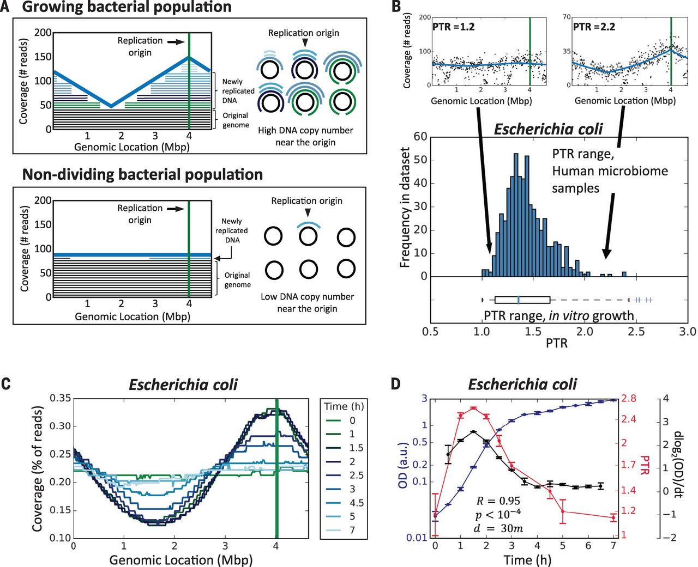
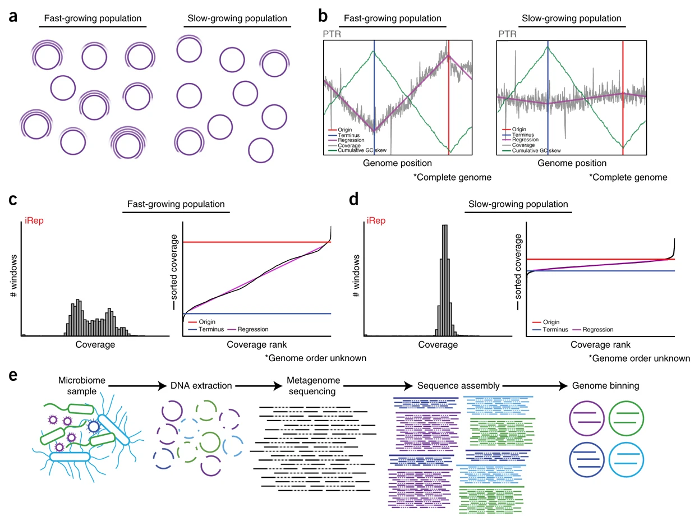
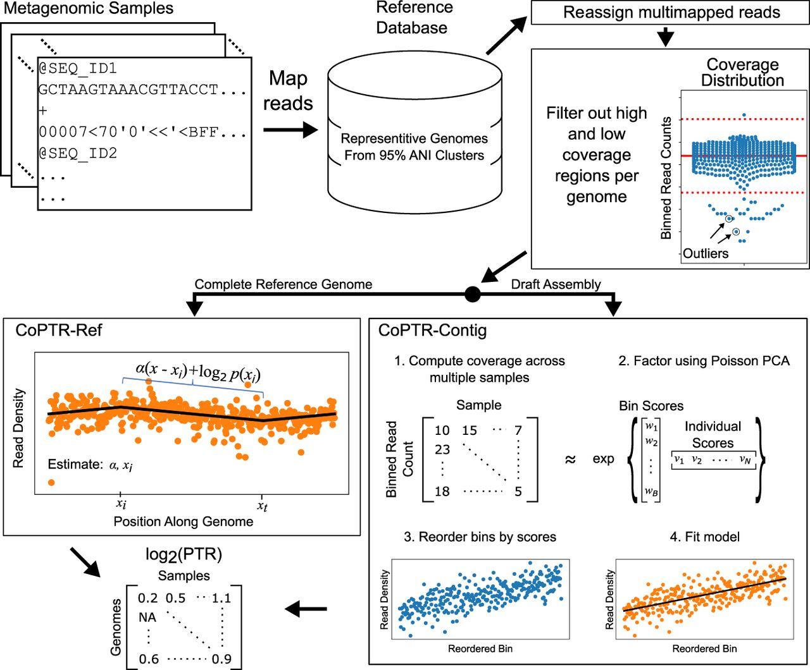

Introduciton
了解细菌在各种环境中的生长动态对于人类健康和环境监测等广泛领域至关重要。传统研究细菌生长的方法往往依赖于培养技术，这不仅耗时，而且对易培养的物种有偏向。然而，随着宏基因组测序技术的兴起，我们现在可以直接从环境样本中探讨整个微生物群落的生长动态。
宏基因组学通过测序样本中所有微生物的集体基因组，提供了微生物群落的全面快照。这种方法使研究人员能够绕过培养步骤，捕捉细菌在自然栖息地中的多样性和动态。通过分析宏基因组数据，我们可以推断细菌的生长速率、种群变化和群落相互作用。
本文主要介绍从宏基因组数据推断细菌生长速率的方法和简要应用。
Methods
PTR
Science 2015: https://www.science.org/doi/10.1126/science.aac4812
宏基因组测序增加了我们对微生物组在健康和疾病中的作用的理解，但它只提供了高度动态的生态系统的快照。在这里，作者表明不同微生物基因组的宏基因组测序读数覆盖模式包含单个波谷和单个波峰，后者与细菌复制起点一致。此外，峰和谷之间的测序覆盖率提供了物种生长速率的定量测量。
原理：是否可以通过检查跨细菌基因组的测序读数覆盖模式来从单个宏基因组样本中探测微生物群的生长动态。除了少数例子 之外，大多数细菌都具有单个圆形染色体，它从单个固定起点向单个终点双向复制。因此，在DNA复制过程中，已经被复制叉通过的区域将有两个拷贝，而尚未复制的区域将有一个拷贝。
总而言之，DNA 区域的拷贝数越接近复制起点，该区域的拷贝数就会越高；反之，该区域越接近复制终点，该区域的拷贝数就会越低。因此，复制起点附近的DNA拷贝数与复制终点附近的DNA拷贝数之间的比率，称之为峰谷比（Peak-to-Trough Ratio，PTR），应该反映细菌群体的生长速度。在较高的生长速率下，更大比例的细胞进行 DNA 复制，并且每个细胞中存在更活跃的复制叉。这导致近Origin DNA 和近 Terminus DNA 之间的比率高于 1:1，从而提供群落增长率的定量读数。
该文章在体外和体内、不同生长条件下以及复杂的细菌群落中证明了这一点。对于几种细菌物种，峰谷覆盖率（而非相对丰度）与炎症性肠病和 II 型糖尿病的表现相关。
文章提供的pipeline：http://genie.weizmann.ac.il/software/bac_growth.html ，该网页已经打不开了😂。
iRep
Nature Biotechnology 2016：https://www.nature.com/articles/nbt.3704
独立于培养物的微生物组研究增加了对微生物群落的复杂性和代谢潜力的理解。然而，为了了解单个微生物组成员对群落功能的贡献，确定哪些细菌正在积极复制非常重要。 作者开发了一种算法 iRep，它使用草稿质量的基因组序列和单时间点宏基因组测序来推断微生物群体的复制率。该算法根据从单个复制起点进行双向基因组复制产生的测序覆盖趋势来计算复制指数 (index of replication, iRep)。 作者应用这种方法来证明人类婴儿服用抗生素后微生物复制率增加。文章还表明，未培养的、与地下水相关的候选门辐射细菌很少在经历地球化学重大变化的地下群落中快速复制。该方法可以应用于任何基因组解析的微生物组研究，以跟踪生物体对不同条件的反应，识别活跃增长的种群并测量复制率以用于建模研究。
软件：https://github.com/christophertbrown/iRep，亲测可用
iRep 是一种通过单时间点宏基因组测序和草图质量基因组确定细菌复制率的方法。
-
安装:
1pip install iRep注意：iRep 需要 Python 3。依赖项有lmfit，numpy，scipy，pandas，seaborn，matplotlib，cPickle。
-
脚本:
iRep: 使用草稿质量的基因组序列测量复制速率iRep_filter.py: 合并和/或过滤 iRep 输出bPTR: 使用完整的基因组序列测量复制速率（修改自 Korem 等人，Science 2015）gc_skew.py: 计算完整基因组序列的 GC 偏斜
-
示例用法:
-
iRep:
1iRep -f sample_data/l_gasseri.fna -s sample_data/l_gasseri*sam -o test.iRep注意：为节省时间，可以同时分析多个基因组：
1iRep -f genome1.fna genome2.fna -s sample_data/l_gasseri*sam -o test.iRep -
bPTR:
1bPTR -f sample_data/l_gasseri.fna -s sample_data/l_gasseri*sam -o test.bPTR.tsv -plot test.bPTR.pdf -m coverage -
GC 偏斜:
1gc_skew.py -f sample_data/l_gasseri.fna
-
-
使用说明: 运行 iRep 和 bPTR 需要每个目标微生物的基因组序列。每个程序都需要单独的 FASTA 文件作为输入。bPTR 需要完整（封闭）的基因组序列，而 iRep 需要高质量的草稿基因组（≥75% 完整性，≤175 个片段/Mbp 序列，≤2% 污染）。iRep 只使用长度≥5 Kbp 的 scaffold，因此基因组完整性估算需要基于通过此阈值的 scaffold。两种方法在基因组从研究样本中组装或已知系统中存在具有高度相似基因组序列的微生物时最为准确。第二组输入是 SAM 格式的映射文件，这些文件应通过使用 Bowtie2 将 DNA 测序读取映射到组装的基因组上生成。提供每个样本生成的 SAM 文件路径。
仅通过所有基因组和映射质量要求的 iRep 值应被视为有效。默认阈值：min cov. = 5，min wins. = 0.98，min r² = 0.9，max fragments/Mbp = 175，GC 校正 min r² = 0.0。
请注意，高水平的菌株变异会影响结果。
iRep 和 bPTR.py 输出包括结果表格（.tsv 文件）和 PDF，显示用于计算复制速率的基因组覆盖测量。
包含许多未映射读取的大型 SAM 文件解析速度较慢，可以使用 shrinksam 快速过滤 SAM 文件中的未映射读取。
如果有 “ImportError: No module named ‘_tkinter’” 错误。可以通过修改 bash MPLBACKEND 变量修复：
|
|
重要提示：
iRep 和 bPTR 都需要有序的 SAM 文件，这些文件可以使用 Bowtie2 的 --reorder 标志生成。有序的 SAM 文件中，表示一组配对读取的两个读取一个接一个排列，这对于这些脚本基于映射质量过滤读取（见 -mm 选项）是必需的。如果 SAM 文件未排序，请确保重新运行 Bowtie 并带上 --reorder 标志，或使用 --sort 选项排序 SAM 文件；否则，脚本在计算覆盖率时会错误选择要包含的映射读取。--sort 选项使用 Unix 排序重新排列 SAM 文件。此选项仅在使用映射质量截止时适用；然而，使用质量截止是推荐的，因为它有助于防止偏离目标的读取映射。
DEMIC
Nature Methods 2018: https://www.nature.com/articles/s41592-018-0182-0
对没有完整基因组序列的物种的微生物生长动态进行准确定量在生物学上很重要，但在宏基因组学中在计算上具有挑战性。在这里，作者提出了微生物群落的动态估计器（DEMIC；https://sourceforge.net/projects/demic/），这是一种基于重叠群和覆盖值的多样本算法，用于推断重叠群与复制起点的相对距离，并得出准确比较样品之间的细菌生长率。作者使用多个合成和真实数据集展示了 DEMIC 对于各种样本大小和组装质量的稳健性能。
软件：https://sourceforge.net/projects/demic/，perl报错未能解决
安装，下载压缩包解压即可：
|
|
DEMIC是一种计算工具，用于比较宏基因组样本中细菌的生长速率，基于推测的从复制起点到contig相对距离及其覆盖度。
如有任何关于DEMIC的问题，可以发邮件给工具作者：gy.james@163.com
- 命令和参数
如何运行DEMIC：
|
|
DEMIC的参数如下：
-S, --sam_dir：输入SAM文件目录（由bowtie2生成）（必需）-F, --fasta_dir：输入FASTA文件目录，每个文件对应一个物种（必需）-O, --out_dir：输出文件目录（默认：./）-W, --window_size：计算覆盖度的窗口大小（默认：5000）-D, --window_step：计算覆盖度的窗口步长（默认：100）-M, --mapq_cutoff：计算覆盖度时的映射质量阈值（默认：5）-L, --mapl_cutoff：计算覆盖度时的映射长度阈值（默认：50）-R, --max_mismatch_ratio：每个读取作为命中的最大错配率（默认：0.03）-G, --log：输出日志文件名（可选）-H, --help：显示帮助信息-T, --thread_num：设置并行运行的线程数（默认：1）-Q, --quiet：运行时保持安静-A, --output_all：运行后保留临时文件（需要更多磁盘空间）
- 使用DEMIC的准备工作
(1) 共组装 不同样本中的宏基因组读取共同组装。请使用现有算法如MegaHit和Ray-Meta。例如，使用MegaHit从三个样本的宏基因组读取生成contigs：
|
|
(2) 比对 将宏基因组读取比对到contigs。请使用BowTie2。SAM文件需要用samtools排序。例如，使用以下命令比对sample1的读取并输出到目录SAM/：
|
|
排序比对并输出到SAM_sorted/sample1_sort.sam：
|
|
请为所有样本的.sam文件执行此操作。
(3) 分类 将contigs聚类到组。请使用现有算法如MaxBin和MetaBAT。例如，使用MaxBin将contig聚类输出到maxbin/：
|
|
（./reads.list包含上述三个.fastq文件的路径）
以上步骤是基于组装的宏基因组数据分析中常用的步骤。
DEMIC需要目录maxbin/和SAM_sorted/。
- 运行DEMIC示例
(1) 确保已安装并行Perl 5.10.1或更高版本，R 3.3.1或更高版本，并使用Linux或Mac OS X操作系统。
(2) 在R中安装“lme4”和“FactoMineR”包：
|
|
(3) 在终端进入DEMIC目录，并将测试数据移动到该目录：
|
|
测试数据包括来自PTRC研究的三个样本的测序数据比对，这些数据格式化为目录SAM_sorted/中的已排序.sam。目录maxbin/中包括两个contig聚类，分别对应C. rodentium和E. faecalis。
(4) 运行DEMIC命令：
|
|
！！暂时会报错，且没有具体报错原因
(5) DEMIC将在大约1分钟内完成工作，并在目录DEMIC/中生成输出文件。
在该目录中，可以查看文件all_PTR.txt的详细信息：
|
|
输出文件易于理解。例如，C. rodentium（ContigCluster1）在Sample2中的生长速率最高。
- 常见问题
(1) 如何在DEMIC中使用多线程？
DEMIC支持多线程。使用多个CPU或内核时，请使用参数-T指定线程数。虽然优化了DEMIC的RAM使用，但使用多线程仍会略微增加RAM使用。建议选择不超过SAM文件数量和contig聚类数量的线程数。
(2) 如何设计实验和分析流程以更好地使用DEMIC？ 虽然DEMIC适用于各种条件，但当实验和分析流程设计得更好时，它的性能可能更佳。
- 样本数量：DEMIC基于多个样本，对于包含六个或更多样本的物种，其准确性更高。建议以合理和可比的深度测序超过六个样本。不同样本可以来自对照组、重复实验、不同个体或条件。
- 组装器：组装方法对binning方法和DEMIC的性能很重要。能够为不同深度和物种生成相对较长contig且错误较少的组装器更为优选。在测试中使用了MEGAHIT，表现良好。
- 分类器：尽管DEMIC可以通过去除潜在污染物纯化contig聚类，但其仍受binning质量（如完整性）的影响。对于低或中等复杂度的微生物群落，建议使用MaxBin。
CoPTR
Genome Research 2022: https://genome.cshlp.org/content/32/3/558.full
细菌基因组的测序覆盖模式（通过峰谷比（PTR）总结）已被证明可以准确反映微生物的生长速率，揭示微生物动力学和宿主-微生物相互作用的新方面。在这里，作者介绍Compute PTR (CoPTR)：一种用于从完整的参考基因组和组装中计算PTR的工具。
使用简单和复杂群落中的生长实验的模拟和数据，作者表明 CoPTR 比当前最先进的技术更准确，同时还提供了更多的总体 PTR 估计。作者进一步发展了一种理论，正式化了 PTR 的生物学解释。作者使用 2935 个物种的参考数据库，将 CoPTR 应用于来自 106 名炎症性肠病患者的 1304 个宏基因组样本的病例对照研究。作者表明，增长率是个性化的，仅与相对丰度松散相关，并且与疾病状态相关。最后，作者展示了如何将 PTR 与相对丰度和代谢组学相结合来研究它们对微生物组的影响。
软件：https://github.com/tyjo/coptr
CoPTR 是一种工具，用于根据完整参考基因组和草图组件的宏基因组测序数据计算峰谷比。 CoPTR 将来自多个宏基因组样本和参考数据库的 fastq 文件作为输入。它输出样本中每个物种的 log2 PTR。
快速使用：
|
|
References
- Tal Korem et al., Growth dynamics of gut microbiota in health and disease inferred from single metagenomic samples.Science349,1101-1106 (2015). DOI:10.1126/science.aac4812
- Brown, C., Olm, M., Thomas, B. et al. Measurement of bacterial replication rates in microbial communities. Nat Biotechnol 34, 1256–1263 (2016). https://doi.org/10.1038/nbt.3704
- Gao, Y., Li, H. Quantifying and comparing bacterial growth dynamics in multiple metagenomic samples. Nat Methods 15, 1041–1044 (2018). https://doi.org/10.1038/s41592-018-0182-0
- Tyler A. Joseph et al., Accurate and robust inference of microbial growth dynamics from metagenomic sequencing reveals personalized growth rates. Genome Res. 2022. 32: 558-568 (2022). doi: 10.1101/gr.275533.121